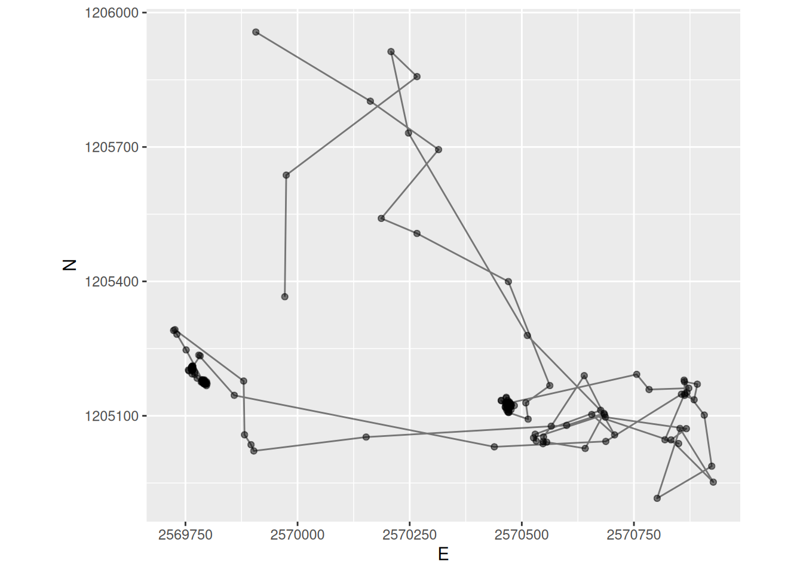
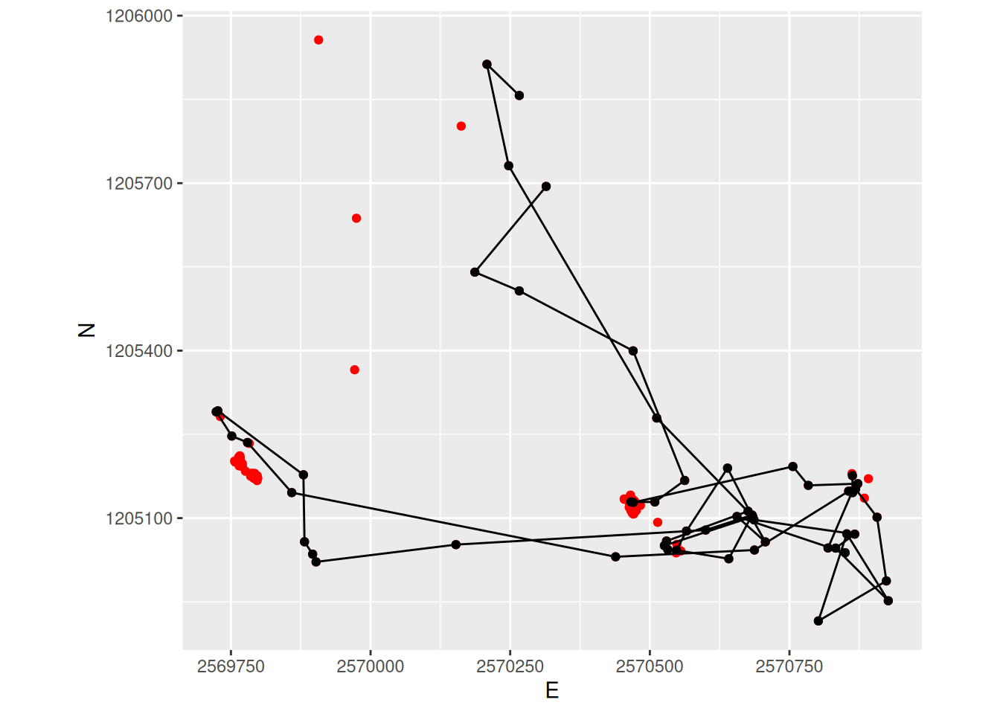

library("readr")
wildschwein <- read_delim("datasets/wildschwein_BE_2056.csv", ",")
library("sf")
library("dplyr")
# Careful! What Timezone is assumed?
sabi <- wildschwein |>
st_as_sf(coords = c("E", "N"), crs = 2056, remove = FALSE) |>
filter(
TierName == "Sabi",
DatetimeUTC >= "2015-07-01",
DatetimeUTC < "2015-07-03"
)Input: Segmentation
You’ve read Laube and Purves (2011) about segmenting trajectories. In the paper, the authors define “static” fixes as “those whose average Euclidean distance to other fixes inside a temporal window v is less than some threshold d”, as illustrated in Figure 16.1

- Specify a temporal windows \(v\) for in which to measure Euclidean distances.
- Measure the distance from every point to every other point within this temporal window \(v\).
- Remove “static points”: These are points where the average distance is less than a given threshold. This segments the trajectory into subtrajectories.
- Now remove short subtrajectories: These are trajectories with a short duration (whereas “short” is tbd).
We will demonstrate implementing this method on the wild boar “Sabi”, restricting ourselves to a couple of tracking days. Your task will be to understand this implementation and apply it to your own movement data.
Open a RStudio Project for this week. Next, copy the wild boar data you downloaded last week (wildschwein_BE_2056.csv) to your project folder. If you cannot find this dataset on your computer, you can re-download it from moodle. Transform the data into an sf object, filter for the wild boar Sabi and a datetime between “2015-07-01” and “2015-07-03”.

Step a): Specify a temporal window \(v\)
In the above dataset, the sampling interval is 15 minutes. If we take a temporal window of 60 minutes, that would mean including 4 fixes. We need to calculate the following Euclidean distances (pos representing single location):
pos[n-2]topos[n]pos[n-1]topos[n]pos[n]topos[n+1]pos[n]topos[n+2]
Step b): Measure the distance to every point within \(v\)
We can use the function distance_by_element from week 2 in combination with lead() and lag() to calculate the Euclidean distance. For example, to create the necessary offset of n-2, we use lag(x, 2). For each offset, we create one individual column.
distance_by_element <- function(later, now) {
as.numeric(
st_distance(later, now, by_element = TRUE)
)
}
sabi <- sabi |>
mutate(
nMinus2 = distance_by_element(lag(geometry, 2), geometry), # distance to pos -30 minutes
nMinus1 = distance_by_element(lag(geometry, 1), geometry), # distance to pos -15 minutes
nPlus1 = distance_by_element(geometry, lead(geometry, 1)), # distance to pos +15 mintues
nPlus2 = distance_by_element(geometry, lead(geometry, 2)) # distance to pos +30 minutes
)Now we want to calculate the mean distance of nMinus2, nMinus1, nPlus1, nPlus2 for each row. Since we want the mean value per Row, we have to explicitly specify this before mutate() with the function rowwise(). To remove this rowwise-grouping, we end the operation with ungroup().
Note that for the first two positions, we cannot calculate a stepMean since there is no Position n-2 for these positions. This is also true for the last to positions (lacking a position n+2).
sabi <- sabi |>
rowwise() |>
mutate(
stepMean = mean(c(nMinus2, nMinus1, nPlus1, nPlus2))
) |>
ungroup()
sabiSimple feature collection with 192 features and 11 fields
Geometry type: POINT
Dimension: XY
Bounding box: xmin: 2569724 ymin: 1204916 xmax: 2570927 ymax: 1205957
Projected CRS: CH1903+ / LV95
# A tibble: 192 × 12
TierID TierName CollarID DatetimeUTC E N
<chr> <chr> <dbl> <dttm> <dbl> <dbl>
1 002A Sabi 12275 2015-06-30 22:00:13 2569972. 1205366.
2 002A Sabi 12275 2015-06-30 22:16:06 2569975. 1205637.
3 002A Sabi 12275 2015-06-30 22:30:19 2570266. 1205857.
4 002A Sabi 12275 2015-06-30 22:45:13 2570208. 1205913.
5 002A Sabi 12275 2015-06-30 23:00:10 2570247. 1205731.
6 002A Sabi 12275 2015-06-30 23:15:17 2570512. 1205279.
7 002A Sabi 12275 2015-06-30 23:30:38 2570684. 1205103.
8 002A Sabi 12275 2015-06-30 23:45:16 2570526. 1205051.
9 002A Sabi 12275 2015-07-01 00:00:10 2570532. 1205044.
10 002A Sabi 12275 2015-07-01 00:15:14 2570530. 1205059.
# ℹ 182 more rows
# ℹ 6 more variables: geometry <POINT [m]>, nMinus2 <dbl>, nMinus1 <dbl>,
# nPlus1 <dbl>, nPlus2 <dbl>, stepMean <dbl>Step c): Remove “static points”
We can now determine if an animal is moving or not by specifying a threshold distance on stepMean. In our example, we use the mean value as a threshold: Positions with distances below this value are considered static.
sabi <- sabi |>
mutate(static = stepMean < mean(stepMean, na.rm = TRUE))
sabi_filter <- sabi |>
filter(!static)
sabi_filter |>
ggplot(aes(E, N)) +
geom_point(data = sabi, col = "red") +
geom_path() +
geom_point() +
coord_fixed() +
theme(legend.position = "bottom")